A bunch of CuTile kernels
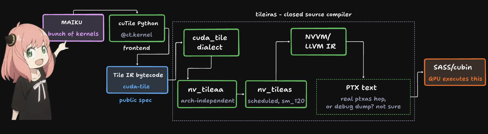
the whole pipeline in one picture: open bytecode in, undocumented SASS out, one closed compiler in the middle
Introduction
Past few months I've been working on writing more and more cuTile kernels, to be fair it's not as mature or better than the other widely used DSLs but I kinda like the premise of its IR, and I think I saw Triton got support for the same lowering recently, so here is a little, I don't know, maybe first impressions if you will, for cuTile, and I kinda sorted all of my kernels and gave it a goofy name. It goes without saying that every kernel in here is written in cuTile. NVIDIA's own docs cover the DSL well enough that redoing the tile vs thread pitch here would just be useless, so go read that for better know-how on the DSL and the whole argument. Here I will start with how it lowers, and what the compiler does and does not tell you, and a couple more arguments around that.
How cuTile lowers
cuTile compiles to Tile IR bytecode, an open MLIR format (the cuda_tile dialect), and every frontend that wants Tile IR goes through the same lowering. unfortunatly closed source compiler takes it from there: tileiras, called "conceptually similar to ptxas" in one of there talks so figure that out on your own I guess.
Essentially going through these 3 stages:
$ cuda-tile-translate matmul_test.mlir -mlir-to-cudatilebc -o matmul_test.bc
$ tileiras --gpu-name=sm_100 matmul_test.bc -o matmul_test.o
$ cuobjdump -sass matmul_test.o
and what cuobjdump pulls out of that object can be undocumented SASS: UTMALDG.2D, UTCHMMA, UTMASTG.2D. Things go straight to SASS from here, and none of those instructions have public documentation. See their LLVM talk for more information.
Skipping PTX might be in hindsight a good idea cause PTX is a SIMT V-ISA, so a tile aware compiler that loweres through it would have to flatten every tile down to per-thread instructions and hope ptxas reconstructs the tile structure for tensor cores and TMA on the other side. Tile IR keeps the tile shape all the way to the final scheduling decision instead, which is how tileiras gets to emit instructions like UTMALDG.2D that never had to become part of PTX's public ISA in the first place.
The open dialect itself does almost nothing. Its entire optimizer, read from Passes.td in the dialect source, is five passes: canonicalize, common subexpression elimination, loop-invariant code motion, one FMA-fusion pass, one loop-split pass. Gated by opt_level. FMA fusion sits outside that ladder, a separate flag the pipeline builder checks on its own, off by default. Everything else that shows up in this post's SASS, TMA descriptor construction, mbarrier insertion, warp specialization, register alloc, instruction scheduling, happens after this, inside tileiras.
There are two ways to load a tile, and it matters which one you use. A view-based load goes through a tensor_view, which carries its own shape and strides, so the compiler has everything it needs to build a TMA descriptor. A pointer-based load, closer to how Triton does it, builds the tile's addresses by hand, and recovering enough structure from that arithmetic to still use TMA is much harder for the compiler to prove. NVIDIA's guidance is blunt about which one to prefer: view-based loads with declared alignment are the recommended path for anything performance-critical I guess.
The Tile IR memory model
Every tile load or store is one memory op per element, and by default none of them are ordered against each other. Ops with no scope specified default to weak. The dialect's own example for what that means is worth pasting here:
%cst = constant <f32: [0.0, 1.0, 2.0, ...]> : tile<64xf32>
%r0 = store_ptr_tko weak %ptr, %cst -> token
%data, %r1 = load_ptr_tko weak %ptr -> tile<64xf32>, token
What is %data? The store's token and the load's input aren't connected, so the two only share an order on the page, not at runtime, and order on the page isn't a guarantee. A token exists only at compile time, with no runtime form, it's just the compiler's way of knowing "keep these two in order." Without one, the load and store can run in whatever order the backend wants. Their docs (LINK?) show three legal lowerings of that exact snippet: one runs the sixty-four stores and loads in reverse order against each other, one runs them matching, one merges the whole thing into two cp.async.bulk.tensor calls issued by a single thread.
Nobody writes a kernel this way. Real code never mentions a token, and the compiler threads one through every memory op automatically, in program order. What actually matters is when the compiler decides it's safe to break that order.
That's the real mechanism behind "the compiler can parallelize your loop," and it's a checkable, per-array decision. A loop that stores into a different, disjoint address each iteration compiles so every iteration's store reads the token from before the loop started, not from the iteration before it, no dependency from store i to store i+1 at all. Two arrays written independently in the same loop get two entirely separate chains, disjointness is tracked per array, not globally. The moment the compiler can't prove disjointness, aliased or overlapping-stride views, the same loop compiles with a full serializing chain instead. The difference is exactly whatever alias and stride facts the compiler can prove about that tensor.
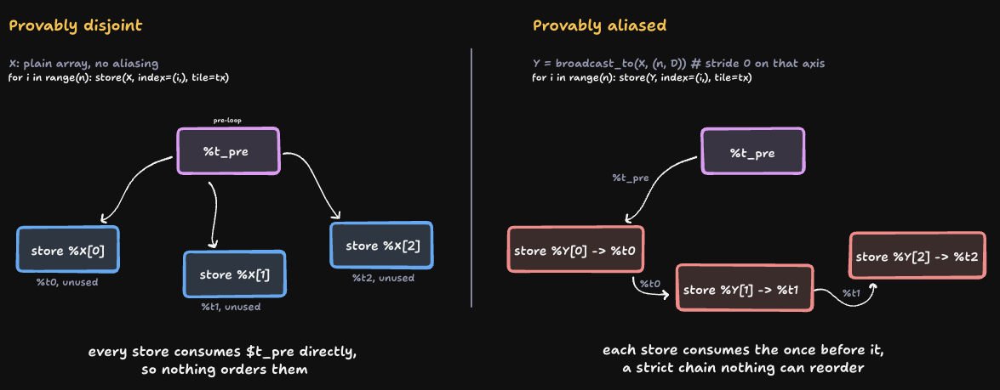
same loop shape, opposite token graph: disjointness is proven per array, and the graph is the actual proof
ct.load/ct.store/ct.atomic_rmw takes in a real memory_order argument, weak, relaxed, acquire, release, acq_rel. The clearest place it earns its keep is a lock. A device-wide spinlock, a thousand-plus CTAs contending on one, is built from atomic_cas with acquire to take the lock, and atomic_xchg with release to drop it. acquire on the take means every read a CTA does once it's inside the lock is guaranteed to happen after it actually won the lock, nothing can get hoisted ahead and read stale data. release on the drop means every write that CTA made while holding the lock is guaranteed visible to whichever CTA takes it next, nothing gets left behind, still in flight, when the lock changes hands.
The hardware
Most of the work on this was done on a single RTX PRO 6000 (sm_120), B200s got pretty darn expensive, tuning and writing kernels for it wasn't worth it for me. Given that these GPUs still come under the Blackwell family but NVIDIA wants to make a couple of bucks off its server hardware hence it does not have anything that makes Blackwell a Blackwell. I won't go deep into the hardware here since that's well covered on Colfax's blog and the datasheet for the GPU. I'll mostly look at the hardware from cuTile itself, but here's a little diagram of how data actually moves through an SM: in through TMA, staged through shared memory, and out to the tensor core through mma.sync, the Ampere instruction in that path.

the real path data takes through an SM: TMA in, shared memory staging, register file, and mma.sync out to the tensor core
For more information on the hardware itself, look at the first section of the Colfax blog. The L2 is 128 MB, shared across all 188 SMs. At the shapes a diffusion transformer might run, inputs and outputs usually sit in L2 for the whole kernel, sometimes the whole forward pass. So when a table later says ">100% of HBM peak," it's an L2 number, so keep that in mind.
65,536 32-bit registers per SM (hasnt changed since volta I guess), split across however many CTAs the occupancy setting keeps resident. Keep one tile too many live, or pick a tile too tall for the budget, and it might spill to local memory. The arithmetic is worth doing once: at occupancy=2 and 128 threads per CTA, the budget is 128 KB per CTA. An attention kernel holding acc, q, k, and v at TILE_M=128, TILE_N=128, D=128 quick maths would tell you that it needs 160 KB, 32 KB over budget resulting in a spill. Drop to TILE_M=64 and the same would need 112 KB which results in no spills i.e. good shit.
TMA sits underneath ct.load/ct.store whenever the access pattern qualifies: dedicated hardware for indexed loads and stores against a fixed pattern, separate from a normal thread-issued load. A kernel talks to it through latency hint and an allow_tma flag.
x0 = ct.load(X, index=(b, h, bid_s, 0), shape=(1, 1, TILE_S, TILE_D2),
padding_mode=zero, latency=7, allow_tma=True)
# allow_tma=False is the one hard guarantee here: this load never lowers through TMA
x1 = ct.load(X, index=(b, h, bid_s, 0), shape=(1, 1, TILE_S, TILE_D2),
padding_mode=zero, allow_tma=False)
latency (docs) is a hint. It tells the scheduler how far ahead to issue the copy, and the compiler still has to decide whether the pattern is regular enough, static shape, known strides, to route through TMA or fall back to per-thread loads. Although not sure on the recent releases even allow_tma=False would trigger the TMA instructions on my initial tests.
CTA clusters are the next scope up, one thread issues a TMA copy, a warp is 32 of those threads, a CTA's worker pool is some number of warps (the IR only supports 4 or 8, atleast for now) and a cluster is where multiple CTAs share an SM to SM interconnect and can address each other's shared memory directly on Blackwell. Clustering buys dual CTA MMA instructions, multicast TMA, distributed shared memory, and cluster wide barriers, on the hardware that has all four. sm_120 doesn't: the multicast variant of the TMA copy instruction is gated to sm_90a/sm_100a/sm_110a, and dual CTA MMA needs tcgen05, which sm_120 doesn't have either (see the attention section below). What a real clustered sm_120 SASS actually shows is pretty narrow: cluster barriers are there, UCGABAR_ARV/UCGABAR_WAIT, the multicast TMA instruction isn't, same UTMALDG.2D as num_ctas=1.
![two real cluster configurations on sm_120. Left, num_ctas=1, no cluster: two SMs each run their own CTA with its own private shared memory, no connection between them. Right, num_ctas=2, a cluster of two CTAs: the two SMs are joined by the real SM-to-SM interconnect, and each CTA's shared memory is directly addressable by the other, distributed shared memory. Two real incidents are called out on the clustered side: mixing num_ctas=2 with a two-pass reduction hangs the GPU outright with no error, and clustering an attention kernel with nothing to actually share across CTAs costs 20x in a real autotune sweep. sm_120's real ceiling is a cluster of up to 16 CTAs, a frontend choice via num_ctas, not a hardware limit, though maiku itself only ever asks for 1 or 2](./assets/maiku/clusters.svg)
the interconnect a cluster actually buys: private shared memory on the left, directly addressable across CTAs on the right, and both of maiku's real cluster mistakes on record
Peak throughput on a 6000 pro should be around 500 TFLOP/s FP16 and 2000 TFLOP/s FP4. sm_120 is Blackwell, but not all of it. B200 (SM100) gets tcgen05.mma, async-dispatched through descriptors, with the accumulator living in Tensor Memory. sm_120 doesn't have addresses for it, no tcgen05, no TMEM. It issues the synchronous, warp-collective mma.sync instead, sourced straight from register memory. mma_scaled, the block-scaled path maiku's MXFP8 and NVFP4 kernels use, is what mma.sync looks like from cuTile, and it schedules differently because it has no TMEM to fall back on. The actual PTX instruction behind NVFP4 block-scaled matmul is mma.sync.aligned.kind::mxf4nvf4.block_scale.scale_vec::4X.m16n8k64.row.col.f32.e2m1.e2m1.f32.ue4m3, one fixed 16x8x64 MMA atom, which is the shape tileiras is actually scheduling around whenever mma_scaled shows up in a kernel. Against the older sm_8x consumer cards, sm_120 gains sub-byte and block-scaled types, TMA, CLC and PDL.
Where the energy goes (unrelated but interesting)
Arithmetic is nearly free next to moving data. A 32-bit FMA is about 4.6pJ at 45nm, a full instruction fetch-through-register-write is about 70pJ for a plain add, mostly cache and control, not the math (Horowitz, ISSCC 2014). NVIDIA's own numbers land on the same shape on a real GPU a 64-bit FMA is about 50pJ, "less than 3 percent of the computational operation's energy per instruction," reading its operands out of on-chip SRAM costs about as much as the FMA itself, 10mm across the die is 310pJ, DRAM is over 10nJ, 200x the FMA (Keckler, Dally, et al., IEEE Micro 2011). That's the actual justification for TMA/TMEM/warp-group instructions above, moving data costs orders of magnitude more than computing on it, so that's always the real target.
It's also why warp width became an energy lever, and NVIDIA and AMD took opposite routes on this. NVIDIA never widened the base warp, still 32 threads since Tesla, it widened what one instruction commands instead wgmma.mma_async/tcgen05.mma drive a whole 128-thread warp-group off one issue, TMA moves a tile off one thread's instruction, TMEM drops the register file from the accumulator's path. AMD's CDNA ran native Wave64 for years, the literal wider-group route, and is reversing it in CDNA5 (MI455X) back to Wave32/SIMD32, plus a tensor data mover that bypasses the register file, the same TMEM fix (ServeTheHome, CDNA 5 deep dive).
What is maiku
maiku is a cuTile kernel library built mostly for diffusion inference. Right now most of the kernels are tuned against the RTX PRO 6000 Blackwell. It's not trying to be a general kernel collection that covers everything torch already does. It also isn't tied to any single model. It exists because I liked the IR and I know the kernels won't be optimal given the limited control that you will have but it's faster to iterate on and it's fascinating what the compiler does (I'll try and dissect that later in the writeup), and that's the reason behind me writing all this.
import maiku, torch
x = torch.randn(1024, 3840, device="cuda", dtype=torch.bfloat16)
w = torch.randn(3840, device="cuda", dtype=torch.bfloat16)
y = maiku.rms_norm(x, w)
y = torch.compile(maiku.rms_norm, fullgraph=True)(x, w) # no graph break
That second line is the reason the library is built the way it is. maiku.rms_norm is a real torch.ops.maiku.rms_norm_fwd custom op, not a torch.autograd.Function wrapper around one. A custom_op body runs below the autograd dispatch key. Call a Function's .apply() from inside one and the backward graph it builds gets discarded right there, the operator's output silently stops requiring grad, and every backward through that kernel comes back empty instead of raising. It's a real wrong-answer failure during backward, not a slow path. Keeping the Function wouldn't have gotten fullgraph=True working anyway. ct.launch itself isn't traceable, and neither is the launcher's own host-side tile-size arithmetic. Wrapping the whole launcher behind one operator hides all of that behind a single opaque boundary instead of leaving it exposed for torch.compile to trip over.
Under that sits a second layer called maiku.ops.<name>. It dispatches across the handful of ops where more than one backend can compete for the same op right now, that's cuTile against a TileLang backend against a plain torch reference (this is very much in progress right now). Each backend registers its own supports() check and a priority, and the dispatcher picks whichever one claims the shape first.
Here's what's actually in the kernel set (as of writing this).
| area | kernels |
|---|---|
| norms / modulation | rms_norm, layer_norm, ada_ln, modulate, modulate_bcast, layernorm_modulate, softmax |
| activations | swiglu, geglu, geglu_tanh, plus fused fp8-output variants |
| attention | bidir_attn (bf16), fp8qk, mxfp8qk, sage_attn (INT8), sage_attn3 (NVFP4) |
| GEMM | linear and fused linear_gelu / linear_swiglu in bf16, fp8, and MXFP8; group_gemm |
| rotary | rope, rope_, rope_qk |
| quantization | per-tensor / per-token / per-channel fp8, MXFP8, NVFP4 |
| fused blocks | norm_qkv_fused, norm_ffn_swiglu, gate_res_add, z_image_transformer_block |
Here are a couple of these swept across shapes against the best available alternative. cuBLAS does suck on sm_120 though so keep that in mind.


linear_swiglu: fusing the activation into the GEMM epilogue wins big at small M, ties at large M where the GEMM itself dominates
linear_fp8: the one GEMM where cuTile meets the vendor path directly, beats torch's _scaled_mm at three of four shapes tested
Where it actually stands
The kernel-level wins matter less than the sum they add up to (source). Swapping a handful of maiku kernels into the Z-Image Turbo pipeline on this GPU gets 1.16x over the diffusers baseline (again not the most optimized kernels by any means). I also tried the more aggressive version, one fully fused mega-kernel per transformer block instead of a dozen separate launches, and that one loses to baseline, 0.67 to 0.71x. The fused norm-into-triple-GEMM kernel sits at 255 registers per thread, the hard ceiling on this hardware, and it still spills 376 words to local memory even at the narrowest row-tile width that compiles. The plain per-op GEMM it's replacing runs a tile eight times as wide at 168 registers and spills nothing. Fusion isn't automatically a win here. maiku only keeps the fusions that actually pay off on this hardware, not every fusion that's possible to write.

every fusion in the mega-kernel path loses to the best per-op path it replaces, worst at norm_ffn_swiglu (0.56x), least bad at gate_res_add (0.92x)
This isn't just a maiku specific finding either. The wider argument about whole model megakernels going on right now runs into the same shape. Fusing everything into one launch hits real limits. A nonlinearity sitting inside a distributed op can block full fusion outright, and a hand written megakernel is hard enough to get right that teams often ship separately optimized, separately launched kernels instead and still come out ahead overall. NVIDIA's answer on Rubin looks like a hardware one rather than a fusion one, tile-level dependency triggers that let a consumer kernel start the moment partial data is ready. That reads like PDL's idea pushed further into the hardware, instead of being solved by fusing the source together. The counter-case worth naming is Mixture-of-Kittens (source), a megakernel for MoE training that lands 2.37x faster than the strongest public baseline by fusing communication into compute. That's a narrow, specific bottleneck though, not a whole model block. maiku's own numbers land on the same side of that line, even inside this one mega-kernel experiment. gate_res_add is the smallest and simplest of the four fusions tested here and it comes closest to breaking even, 0.92x. norm_qkv_fused and norm_ffn_swiglu fuse a whole norm into GEMM chain instead and lose badly, 0.56x to 0.74x. The bigger the fusion the more it costs on this hardware, not the other way around, or maybe I'm just less educated on the megakernel front, I do see Luminal doing some good work there, and a related paper on mega-kernelizing tensor programs worth reading on the same subject.
Z-Image Turbo, same prompt and seed, left to right: stock, fp8, mxfp8, hybrid, mega-kernel, the mega-kernel path is slower (see above) but not visibly different
Disecting SwiGLU
SwiGLU splits an interleaved [M, 2N] tensor into a gate half and an up half, then computes SiLU(gate) * up. maiku's kernel does that in 24.8 ms at 4096x3840. Calling maiku.swiglu took 135.8.
That gap, 111 ms, isn't dispatch, dispatch on the box was around 6ms. It's two lines in the wrapper, before the kernel even runs:
gate = x[:, :n].contiguous()
up = x[:, n:].contiguous()
Both are views into the same buffer, sliced on the last dimension, and both get copied before the kernel sees them around 63 MB of copy in front of a kernel that moves 94 MB total. x[:, :n] and x[:, n:] are strided views of one tensor, and a tensor_view in Tile IR carries its own shape and stride, which is exactly what lets the compiler consume the slice directly, no physically contiguous buffer required. cuTile takes strided arrays directly. The .contiguous() calls were doing absolutly nothing. One upfront .contiguous() on x (free, since x is already contiguous at these shapes) took things back to 24.8ms. The point of this little story is its not always a better DSL or a better computation model sometimes its little things hiding in the corner somewhere.

same kernel, same 24.8 microseconds, both times: the difference is entirely in what the wrapper did before calling it
Two elementwise_kernel copies at 50µs each, then the real kernel at 34µs, ≈134µs total.
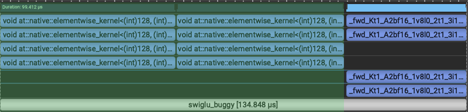
the real nsys capture, buggy run: two copy kernels then the real kernel, back to back, this is where the ≈133µs total and the 35.0µs kernel-only number above actually come from
One more thing the real kernel itself isn't quite the same speed in both captures, 34µs in the buggy run against 23.7µs in the fixed one, same cubin, same shape. The difference is L2. The two 31 MB copies run immediately before the kernel and evict it out of cache, so the buggy kernel reads cold while the fixed one reads warm. Removing the copies doesn't just remove copy time, it also makes the real kernel faster, cause at these shapes the tensors live in L2, and anything that touches L2 in between costs the next kernel too.
Dumping the SASS confirms the load path, two LDG.E.128 instructions 128-bit vectorized, off the row stride not a TMA descriptor, the same either way once the copy was gone. REG:32, STACK:0 no spills. The tail is handled by predication and not a branch, an out-of-bounds lane just doesn't issue the load.
One more thing worth naming since it connects to something else in this post: the reciprocal inside SiLU's sigmoid isn't a hardware divide, MUFU.RCP plus two rounds of Newton-Raphson refinement, with an FCHK predicate falling through to $__cuda_sm3x_div_rn_noftz_f32_slowpath when the fast path isn't accurate enough. That's the identical shared subroutine the fdiv finding in "what cuTile cannot do" hits for a literal /. cuTile doesn't special-case division, a / written in source and a reciprocal hiding inside sigmoid route through the same fast-path-plus-IEEE-fallback pattern.
Real cost of being memory-bound is that the dominant stall by a wide margin is Stall Long Scoreboard, warps waiting on an L1TEX/global-memory dependency, about 8.3 of the 12.3 cycles between issued instructions, 67% of the total. What compute the kernel does do leans on the slow path too, the transcendental pipe, MUFU.EX2 and MUFU.RCP, is the single busiest pipe in the whole kernel, busier than plain FMA. The scheduler numbers make the cost concrete. Out of a theoretical ceiling near 12 warps per scheduler, this kernel keeps about 3.55 active on average, and of those only 0.38 are actually eligible to issue on any given cycle. No warp eligible at all 71% of the time. Not a resource ceiling, this kernel's own register and shared-memory footprint barely constrains it, just not enough concurrent work in flight to hide the wait.
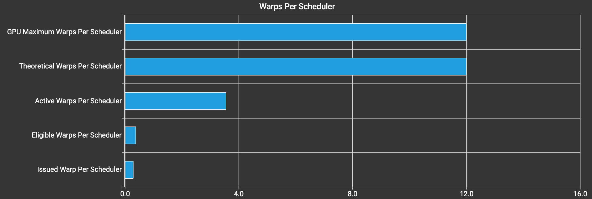
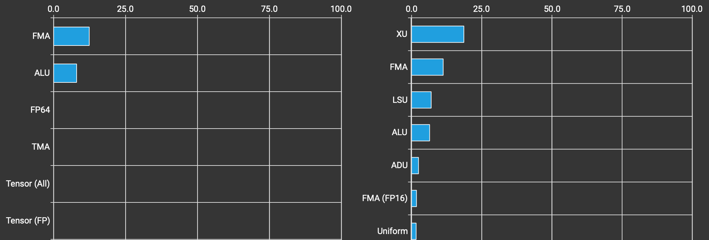
real ncu Scheduler Statistics: theoretical ceiling near 12 warps per scheduler, 3.55 actually resident, 0.38 eligible to issue on any given cycle
real ncu Pipe Utilization: XU, the transcendental pipe behind MUFU.EX2/MUFU.RCP, is the busiest pipe in the kernel, ahead of plain FMA
linear_mxfp8: what it does, and what it doesn't beat
Block-scaled MXFP8 GEMM. e4m3 elements, one e8m0 scale, a plain power-of-two exponent, per 32 elements along K. The quantizer gets that scale from the block's amax without a single transcendental call, a bitcast, a shift, an add, cheap enough to be free next to the GEMM itself. On the GEMM side the tile arrives through TMA, double-buffered, two SMEM stages, one full and being consumed by the tensor core while the other refills:
UTMALDG.2D [UR28], [UR10], desc[URZ] ;
SYNCS.ARRIVE.TRANS64 RZ, [UR12+0xb008], R4 ;
SYNCS.PHASECHK.TRANS64.TRYWAIT P0, [UR12+0xb028], R3 ;
The K-loop itself is fully unrolled, no branch back, and the compiler warp-specializes it without being asked, one warp-group dropped to 32 registers, another grown to 224 via real USETMAXREG.TRY_ALLOC.CTAPOOL/DEALLOC.CTAPOOL instructions, nothing in the Python source requested this.

MXFP8's block scaled layout: one scale byte per 32 elements, written directly into its CUTLASS blocked position
Real numbers against real baselines, three shapes, same card. torch._scaled_mm has a native block-scaled MXFP8 path, and Quack ships one too. maiku doesn't win against either, at any shape:
| M, K, N | maiku | native _scaled_mm | Quack | maiku vs best |
|---|---|---|---|---|
| 1024, 3840, 3840 | 96.7 µs | 90.6 µs | 86.0 µs | 1.12x slower |
| 4096, 3840, 10240 | 741.8 µs | 488.1 µs | 478.0 µs | 1.55x slower |
| 4608, 6144, 6144 | 827.0 µs | 535.4 µs | 537.0 µs | 1.54x slower |
The gap widens with size, not shrinks. cuTile's automatic scheduling was never going to match hand-tuned CuTe-DSL on its own ground; what's worth having is where the gap comes from.
Real ncu on both kernels, same shape, says Quack isn't winning by avoiding register and shared-memory pressure, it's spending more of both and still coming out ahead, because what it's spending them on is overlap: one TMA-load warp-group plus two compute warp-groups, pingpong scheduling, one tile's epilogue running against the next tile's mainloop instead of the two running back to back. Lower theoretical occupancy, higher achieved, the inversion is real, not a rounding artifact:
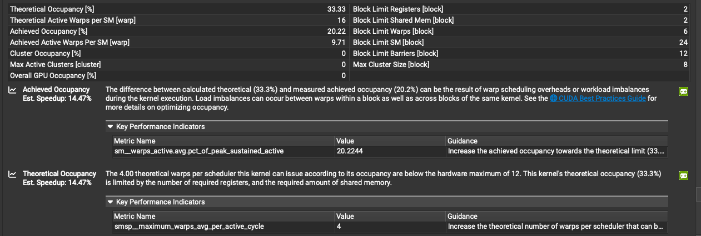
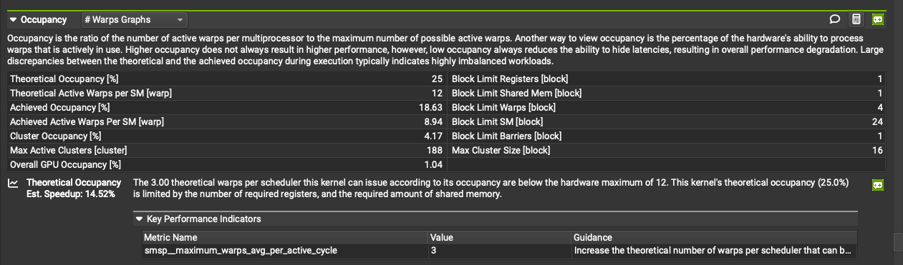
maiku: higher ceiling, 33.33% theoretical, but only reaches 60.7% of its own ceiling
Quack: lower ceiling, 25% theoretical, but reaches 74.5% of its own ceiling, register-limited to one block per SM either way
The SASS diff says exactly what that overlap costs, and where cuTile can't follow. Both kernels dispatch through the identical QMMA.SF.16832.F32.E4M3.E4M3.E8, so the gap isn't a better MMA instruction, it's what surrounds it. Quack's kernel carries a real async handoff primitive maiku's never emits, 4x BAR.ARV, arrive-without-wait, against zero in maiku's. Named-barrier traffic roughly doubles overall, 19x BAR.SYNC.DEFER_BLOCKING against maiku's 9. TMA reaches further too, UTMALDG.3D and .4D alongside plain 2D, where maiku only ever emits UTMALDG.2D. None of these are exotic instructions maiku's compiler can't reach, cuTile's own kernels already use BAR.SYNC and USETMAXREG unprompted. What's missing is asking for a specific pattern: no op in the public dialect places a named-barrier arrive-without-wait by hand, no way to write "two consumer groups, alternate tiles, hand off async" the way CuTe-DSL lets Quack's author write it directly.
That gap isn't tunable and isn't an oversight, both checked directly rather than assumed. Tunable: swept num_worker_warps, the only lever aimed at this, alone and combined with num_ctas/occupancy/opt_level, against the shipped auto config, same shape. Every explicit override was slower, up to 2.4x, and its SASS still carries zero BAR.ARV. Oversight: no, an NVIDIA maintainer confirmed it directly on cutile-python issue #12, "Pipelining & warp specialization strategies are not exposed in the DSL... Direct control over these primitives is not exposed in the DSL." The dialect that would need the op is open, Apache-2.0, but the compiler that would need to do anything with it, tileiras, is closed. Not a gap the open pieces alone can fix.
The second gap: not a missing primitive, a missing load path
The warp-specialization gap above is cuTile's compiler having no op to reach for. This one is different: cuTile has the op, the kernel just never uses it for one specific tensor. Start from the top and read down through ncu's own pages, same shape, same run.
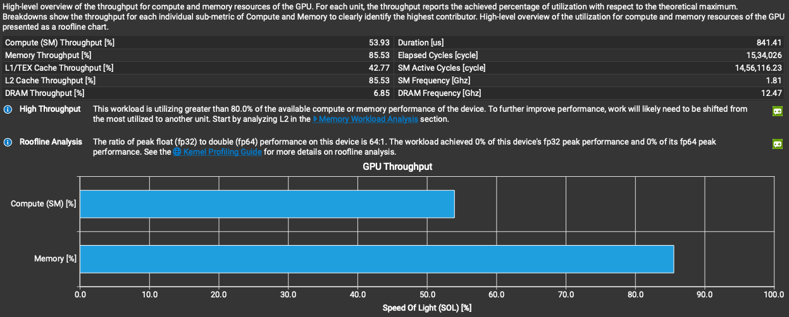
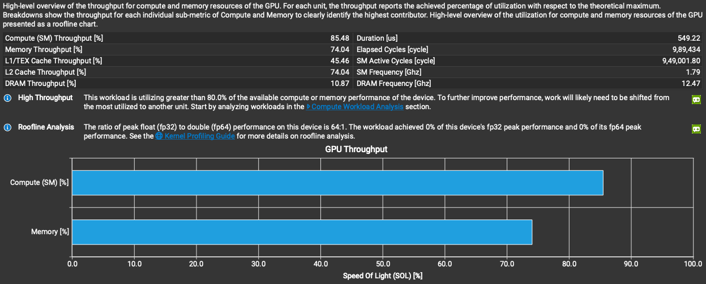
maiku: memory-bound, 85.53% memory throughput against 53.93% compute, 841.41us
Quack: compute-bound, 85.48% compute throughput against 74.04% memory, 549.22us, 1.53x faster
Both kernels run the identical MMA instruction on the identical operands. maiku is memory-bound on a GEMM, which is backwards, DRAM sits at 6.85%, so it isn't bandwidth either, something inside the chip is the bottleneck. The memory chart names it directly:
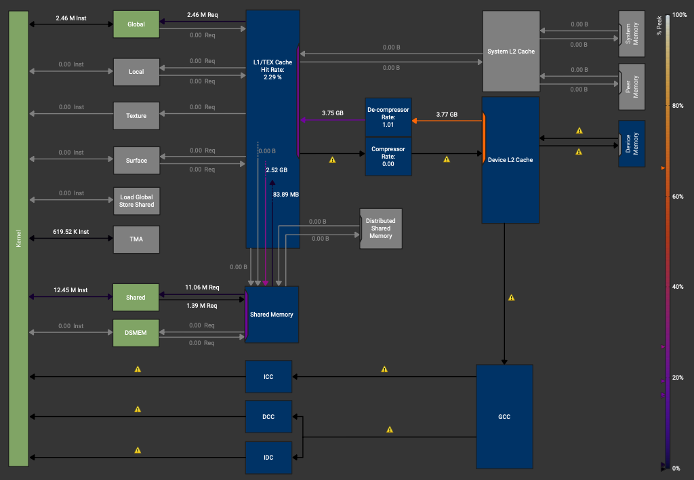
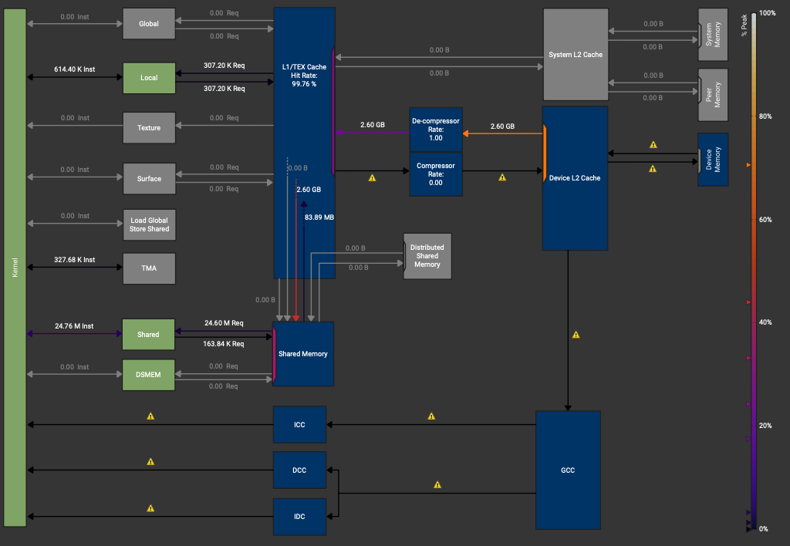
maiku: L1 hit rate 2.29%, and a real Global-load instruction count that shouldn't be nonzero on a TMA-fed GEMM at all
Quack: L1 hit rate 99.76%, zero Global-load instructions, every operand arrives through TMA or shared memory
That's the tell. maiku's main X and W tiles do arrive through TMA, staged into shared memory, pulled into registers through LDSM.16.M88.4, the efficient path, confirmed directly in the SASS. The scale tensors don't get the same treatment. ncu's source counters name the exact lines:
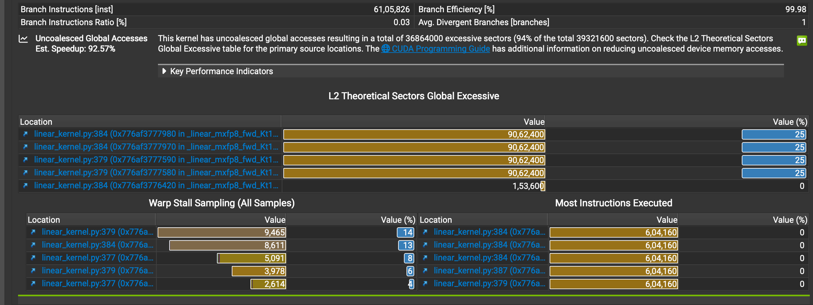
linear_kernel.py:379 and :384, the XScale and WScale loads, 36.86M excessive sectors out of 39.32M total, 94%, est. speedup 92.57%
xs = ct.bitcast(ct.load(XScale, index=(bid_m, k), shape=(TM, TKS),
padding_mode=zero, latency=1),
ct.float8_e8m0fnu)
ws = ct.bitcast(ct.load(WScale, index=(k, bid_n), shape=(TKS, TN),
order=(1, 0), padding_mode=zero, latency=1),
ct.float8_e8m0fnu)
Same ct.load call the X and W tiles use two lines above, different result. The compiled SASS for these two lines is LDG.E.U8, predicated, one byte at a time, straight from global memory, never staged through shared memory at all. Every other operand in this kernel goes through TMA. These two don't, and there's no knob in the public dialect to route them there, no way to tell ct.load "stage this one through shared memory like the others."
Quack's author didn't get this for free either, CuTe-DSL is fully manual, every operand's placement is a choice the author makes explicitly, and Quack's own scale bytes are still not perfectly coalesced, ncu flags LDS.U8 at a real four-byte stride, structurally the same access pattern maiku has. What's different is where it happens: shared memory, SRAM, tens of cycles, against maiku's global memory, hundreds of cycles. Same mistake, staged in the fast place instead of the slow one:
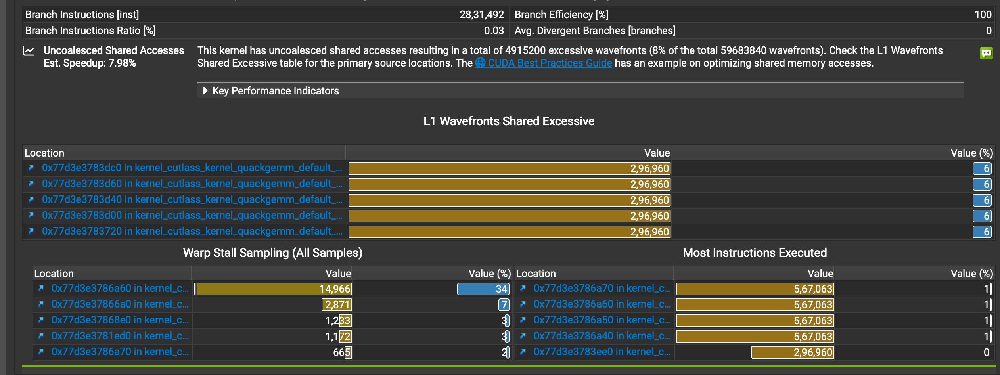
Quack's own version of the same bug class, on shared memory: 4.92M excessive wavefronts out of 59.68M, 8%, est. speedup 7.98%, an order of magnitude cheaper than maiku's 92.57%
The L1 thrash from maiku's uncoalesced global loads shows up again in the instruction stream. Both kernels compute the identical amount of real math, same M, K, N, same MMA instruction, and maiku executes 2.24x more instructions doing it:
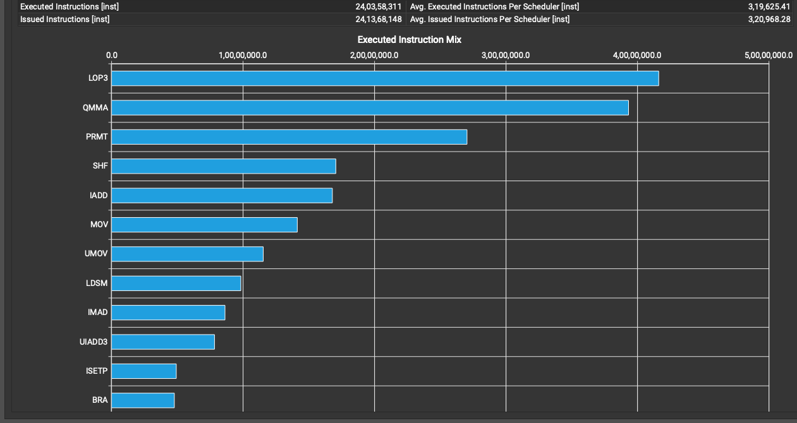
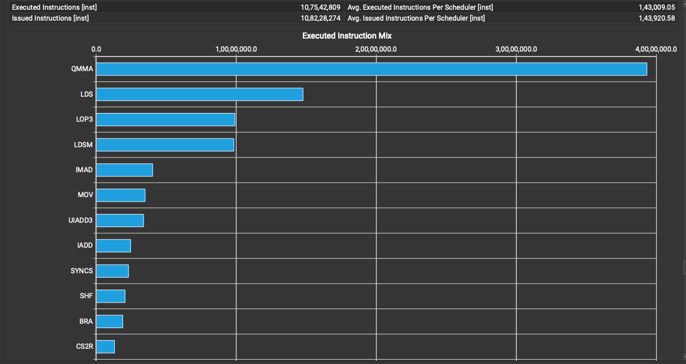
maiku: 240,358,311 executed instructions, LOP3 outranks QMMA at the top of the list
Quack: 107,542,809 executed instructions, QMMA dominates outright, the shape a GEMM's instruction mix should have
LOP3 outranking QMMA is the byte-unpacking cost of pulling e8m0 scales out of predicated single-byte loads, not GEMM work. It also explains the live SASS window from earlier: with the scale bytes stuck behind a slow, uncoalesced global fetch, the compiler's only lever is to hoist every QMMA it can ahead of the next dependency, so they land back to back with nothing between them. Quack's scale bytes are already sitting in fast shared memory by the time they're needed, so the compiler doesn't need to hoist anything, and QMMA and LDS.U8 alternate tile by tile instead:
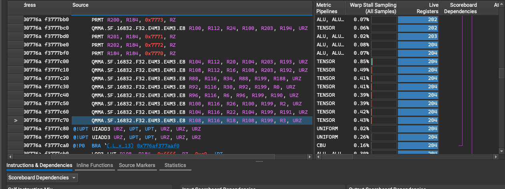
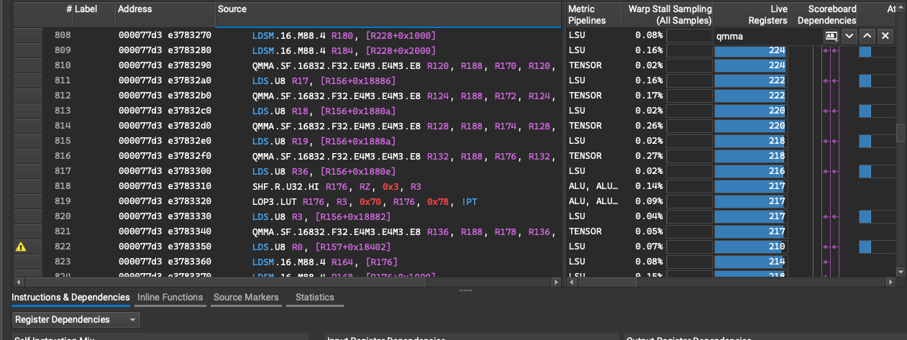
maiku: eight QMMA.SF back to back, the compiler hoisting everything it can ahead of the slow global fetch
Quack: QMMA / LDS.U8 alternating tile by tile, nothing to hide because the data's already close
This gap is a different shape than the warp-specialization one. That one is real, checked, and closed off by the compiler, no lever in the public dialect reaches it. This one is a load a cuTile kernel author writes the same way as every other load in the file, and gets a completely different, much worse compiled result, with no visible reason why from the Python source and no diagnostic pointing back at it, only ncu after the fact says which two lines to look at. The two-orders-of-magnitude gap between maiku's 92.57% and Quack's 7.98% est. speedup on structurally the same access pattern is the actual measure of what routing a small auxiliary tensor through shared memory instead of leaving it on the direct global path is worth here, and it's most of what separates 53.93% from 85.48% compute throughput on this shape.
mxfp8qk attention: fp8 Q/K, bf16 V, and what changes on sm_100
mxfp8qk quantizes some of its operands and leaves others alone: Q and K go through MXFP8, V stays bf16. The SASS shows the split directly. QKT issues through QMMA.SF.16832.F32.E4M3.E4M3.E8, the same block-scaled instruction linear_mxfp8 uses, carrying its own SFA/SFB scale operands. PV issues through plain HMMA.16816.F32.BF16 instead, no scale operands, because V was never quantized:
QMMA.SF.16832.F32.E4M3.E4M3.E8 R16, R40, R76, RZ, R185, R16, URZ ;
HMMA.16816.F32.BF16 R72, R112, R36, R72 ;
Same kernel, two different tensor-core instruction families in the same K-loop, governed by what was actually quantized. The Q/K/V loads go through TMA at real rank, four instances of UTMALDG.4D, one per axis of [B, H, S, D], unlike linear_mxfp8's UTMALDG.2D. And the same unrequested warp specialization shows up here too, the same two register budgets as linear_mxfp8's split on a kernel with a completely different operand mix, which says the split tracks shape, not something GEMM-specific.
Real numbers at the shape this project actually runs, Z-Image DiT scale, B=1, H=24, Sq=Sk=4224, D=128. No Quack attention kernel exists to compare against, so the baseline here is torch SDPA's three backends:
| kernel | latency | vs maiku |
|---|---|---|
| maiku mxfp8qk | 906.0 µs | — |
| SDPA, cuDNN backend | 748.2 µs | maiku 1.21x slower (best) |
| SDPA, flash backend | 794.2 µs | maiku 1.14x slower |
| SDPA, mem-efficient backend | 1796.5 µs | maiku 1.98x faster |
Loses to the two backends that matter, beats the one that doesn't. Real ncu at this shape says why: 24.37–24.43% achieved occupancy against 33.33% theoretical, the same register-bound shortfall as the GEMM, and DRAM throughput of only ~3.10%, this problem stays L2-resident, so it isn't a bandwidth problem either. Not enough warps in flight to hide tensor-core latency, and no path in the public dialect to hand-place the async barrier traffic that would fix it, the same limitation linear_mxfp8 hits, confirmed on the maintainer issue cited there.
None of the above is what this exact kernel becomes on sm_100, cross-compiled and never executed, sm_120 is the only device in this project. Where sm_120 issues QMMA.SF/HMMA out of the register file, sm_100 issues real tcgen05-family dispatch, every operand living in Tensor Memory, addressed as tmem[...], through a real global descriptor operand:
UTCHMMA tmem[UR22], gdesc[UR12], tmem[UR7], tmem[UR18], idesc[UR19], UPT ;
STTM.16dp32bit_t0_t15.x64 tmem[UR9], RZ ;
LDTM.16dp32bit_t0_t15.x64 R4, tmem[UR12] ;
This is the exact instruction family the hardware section names for B200/SM10x from documentation, tcgen05.mma, accumulator in Tensor Memory, confirmed here on one specific kernel this project ships, not just asserted from a datasheet.
What cuTile cannot do
cuTile is built for memory-bound work: row-wise kernels, GEMMs, anything where the win comes from moving fewer bytes or moving them from a nearer place. It has no explicit warp specialization, no named barriers, no manual TMA multicast or double buffering, and that's structural, not just under-documented: the open dialect has no op named TMA, no op named barrier, no op named warp group, anywhere. UTMALDG.2D, the mbarrier arrive/wait pair, USETMAXREG, none of them correspond to anything nameable in the public IR. The only levers are latency= and allow_tma (see the hardware section). allow_tma=False is the one real guarantee among them. Everything else, latency either way, allow_tma=True, is tileiras deciding on its own.
Whether the compiler does this anyway isn't the same answer for every kernel, and it tracks kernel shape, not the API surface: linear_mxfp8's warp-group register split (further up) is real and automatic, AdaLN's backward emits the identical three-instruction USETMAXREG pattern, its forward a milder two, swiglu, flat and elementwise, has zero. No knob in cuTile asks for any of it either way.
That control does exist in Python somewhere, just not here: cuda.lang, a separate SIMT-style compiler in the same repository, has real mbarrier and tcgen05/TMEM primitives and an explicit warp-specialized NVFP4 GEMM tutorial ported from CuTe. It doesn't go through Tile IR, targets PTX directly, and isn't documented as supported anywhere. Real, but not what this library is built on.
A few gaps are concrete enough to name. Integer pow still throws TileInternalError, the float version works fine. check_bounds=False spread further than it used to, plain ct.load/ct.store got it too, on top of ct.gather, ct.scatter, and the atomics, but ct.load_advanced_indexing, the one gather-shaped call maiku actually uses, is now the single remaining holdout, not one option among several missing it. Where it does exist it's a real IR-level lever, not just a skipped runtime check: the compiled op drops its predicate-mask operand entirely rather than carrying a mask that's always true. ct.barrier semantics for multi-CTA cluster reductions are unclear enough to be an open issue. There's no native varlen support, no cu_seqlens, and no dynamic persistent tile scheduler, every grid is static.
A few real capabilities sit on the other side of that list, present in the compiler and unused by anything in this post. ct.scan is a full, general associative parallel scan, a user-supplied combine function, an identity element, an optional reverse direction, cumsum and cumprod are just two instantiations of it, not a special case. cuTile ships its own real autotuner too, plain brute-force exhaustive search over a declared config space, capped by a hard max_iter, not a heuristic, with a real split between scratch arguments and launch arguments specifically so tuning an in-place kernel doesn't corrupt its own state between trials. And ct.launch's stream argument takes a torch.cuda.Stream, a CuPy stream, a Numba CUDA stream, or a bare integer pointer from any of the three, interchangeably, real interop surface for anyone who ever needs to drop a cuTile kernel into a non-PyTorch pipeline.
Looking inside the compiler is harder than it should be. CUDA_TILE_DUMP_TILEIR doesn't work on every build; CUDA_TILE_LOGS=CUTILEIR is the workaround that actually prints post-rewrite IR. Full validation needs a private extension nobody outside NVIDIA has. Printing Tile IR directly is its own open issue. There's a deeper hook than the env var, too: cuda.tile._compiler.lower_to_ptx can be monkey-patched to intercept the HIR graph before it becomes PTX at all, undocumented and unsupported, but real. Nobody ships anything built on it yet.
PDL is the obvious fix for a chunk of this: it closes the launch gap between small kernels without giving up cuBLAS's GEMM the way fusing would. It's already 1.07 to 1.73x on independent chained launches (see the hardware section). What's unproven is the case that would actually pay off, a real producer feeding a real consumer, not two unrelated kernels back to back. Cluster Launch Control, Blackwell's hardware work queue, is the same story for group_gemm: static striding balances tiles fine when only K varies between groups, and does nothing when M and K both vary, which is the real MoE case. A dynamic CLC-fed queue fixes that.
AMD support doesn't exist and nothing is in flight toward it. tileiras is CUDA only, and nothing published points at a ROCm path. Whether that gap is worth closing depends on whether someone builds a Tile-IR-to-ROCm backend, the way Triton has one. Nobody's building it yet.
None of this reads as instability. A deep audit against the compiler's own test suite found no correctness bugs: 5,999 of 6,429 tests passing, and every failure traced to an out-of-memory in the test harness's own tensor comparison, not the compiler.
One assumption worth checking rather than repeating: strength-reducing x / C for a compile-time constant C to a plain multiply sounds like something any compiler would do. On cuTile 1.5.0 / tileiras 13.3.36 it doesn't. y = x / 4.0 still emits the full IEEE division sequence, 296 instructions against 304 for a runtime divisor, barely fewer. The only concession to the constant is one hoisted MUFU.RCP instead of eight per-element ones.
What's next for maiku
Comms kernels
Nothing here exists yet, and it's worth saying so plainly instead of dressing it up. Upstream cuTile has an NCCL backend tracked as in progress and NVSHMEM tracked as blocked. A comms kernel isn't compute, it's a GEMM or attention block on one GPU handing off a shard of its output to another GPU mid-forward, an all-reduce or all-gather over NVLink instead of a memory access, so it's a different problem from anything else in this post: correctness depends on what's happening on other devices, not just this one. maiku needs that the moment a single GPU stops being enough to serve real traffic, tensor-parallel or sequence-parallel DiT blocks at minimum, splitting one transformer block's attention or FFN across GPUs instead of running the whole model on one card. This is open ground, not a report of work done.
tilelang, already real
This one isn't hypothetical, it's already running. maiku/backends/tilelang_backend.py and a small TileLang kernel set (attention, fp8 GEMM, fused ops, NVFP4 GEMM) are registered in the dispatch layer today, at priority 50 against cuTile's, below TileLang's priority of 100 on the ops where both compete. The comment next to that number says why it's set that way: priority is evidence, not preference. It's there because measurements on LTX showed TileLang winning those specific ops, not because of any general preference for one backend over the other.
PDL on a real pipeline
The chained-launch measurement, 1.07 to 1.73x, only tests independent kernels back to back. The actual target, a norm feeding a GEMM, hasn't been tested for correctness, because there's no device-side grid-dependency-sync exposed and it isn't obvious the independent-launch result carries over. That's the next experiment, not a new one.
Fusing the MXFP8 FFN
linear_mxfp8 loses to the fp8 path end to end for one specific reason: the fp8 FFN runs as one fused launch, gate, up, and SiLU together, while the MXFP8 FFN still runs two separate linear_mxfp8 calls plus an explicit SiLU. A fused MXFP8 SwiGLU closes that gap, and MXFP8 already has the better accuracy, 27.3 dB against fp8's 26.8, so the fix makes it both the fastest and the most accurate path at once.
Dynamic scheduling for group_gemm
The current scheduler is static striding, which balances tiles fine when groups only vary in K and does nothing when both M and K vary, the real MoE case, each worker deriving its next tile from a formula instead of asking what's actually left to do. Cluster Launch Control is the fix, and it's a real, specific mechanism, not just "dynamic scheduling" in the abstract: a CTA that hasn't started yet asks the grid scheduler to cancel it and hand back a pending tile coordinate instead, hardware writes that answer, a coordinate or a clean "nothing left," into a 16-byte record in shared memory and signals it through an mbarrier, the same primitive already doing real work everywhere else in this post. The request gets issued before the current tile finishes, not after, so the wait hides behind compute the same way TMA's prefetch hides behind it. Blackwell-specific, Hopper doesn't have it. One real blocker sits in front of the launch-overhead half of that story regardless: CUDA graphs work for cuTile kernels today, including kernels that accumulate into an existing buffer across replays, but a list of tensors, exactly the calling convention group_gemm uses for its per-group arrays, is explicitly rejected inside graph capture, a real, named error, not a silent failure. The message says "isn't supported yet," which reads as a known gap rather than a permanent one, but it means wrapping group_gemm in a graph to remove its own launch overhead doesn't work today. sage_attn3, maiku's NVFP4 attention kernel, is the other place this matters. It already runs the FP4 mainloop that FlashAttention 4's CuTe kernels can't reach on sm_120 (those kernels are sm_100 only), but its scheduler is a plain grid with no ordering and no persistence. Wrapping that mainloop in FA4-class scheduling, LPT ordering plus CLC plus L2-aware tile order, reaches a scheduler class FA4 itself can't run on this hardware.
| scenario | cuTile | bmm | loop-matmul | compiled | compile-cudagraph |
|---|---|---|---|---|---|
| MoE variable-M, G=4 | 52.7 µs (×1.59) | — | 84.0 µs | 84.1 µs | 92.6 µs |
| MoE variable-M, G=8 | 101 µs (×1.81) | — | 182 µs | 184 µs | 270 µs |
| MoE variable-M, G=16 | 200 µs (×1.81) | — | 362 µs | 365 µs | 537 µs |
| MoE variable-M, G=32 | 380 µs (×1.95) | — | 741 µs | 743 µs | 1.11 ms |
| equal-shape 256×1024×1024, G=8 | 39.4 µs (×0.52) | 20.5 µs | 98.4 µs | 98.6 µs | 103 µs |
| equal-shape 512×2048×2048, G=16 | 299 µs (×0.98) | 292 µs | 405 µs | 408 µs | 598 µs |
| equal-shape 128×4096×4096, G=32 | 784 µs (×0.98) | 765 µs | 1.05 ms | 1.05 ms | 2.61 ms |
| heterogeneous M/K/N, G=8 | 67.5 µs (×1.49) | — | 101 µs | 101 µs | 109 µs |
| large, compute-bound, G=4 | 905 µs (×1.03) | 1.11 ms | 938 µs | 936 µs | 1.21 ms |
µs, lower is better, bold = fastest · RTX PRO 6000 (sm_120) · the persistent single-launch grouped GEMM already wins the MoE and heterogeneous regime with today's static scheduler, up to 1.95x at G=32, CLC is the lever for the cases it still loses: small equal-shaped batches where bmm wins outright
References
- NVIDIA cuTile Python documentation
- Tile IR memory model — scopes, on
weakas the default memory order - cuda-tile
Passes.td, the open dialect's own optimizer pass list - cutile-python
_bytecode/type.py, thetensor_viewdefinition - cutile-python
_stub.py,atomic_cas - cutile-python
_stub.py,atomic_xchg - LLVM dev meeting talk on MLIR, on lowering through undocumented backend instructions
- Colfax Research blog
- Colfax, CUTLASS tutorial: NVFP4 block-scaled GEMM on RTX PRO Blackwell (sm12x)
- NVIDIA RTX Blackwell PRO GPU Architecture datasheet
- Horowitz, "Computing's Energy Problem (and what we can do about it)," ISSCC 2014
- Keckler, Dally, Khailany, Garland, Glasco, "GPUs and the Future of Parallel Computing," IEEE Micro 2011
- ServeTheHome, AMD Instinct MI455X deep dive: CDNA 5
- Dao-AILab/quack, sm_120 MXFP8 GEMM comparison
- cutile-python issue #12, NVIDIA on pipelining/warp specialization not being exposed in the DSL